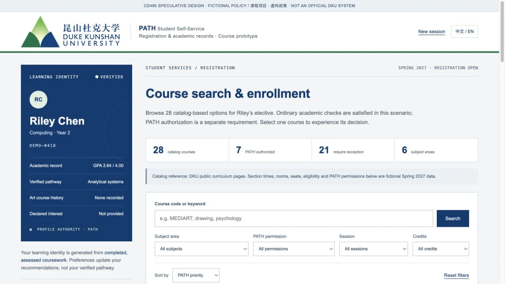
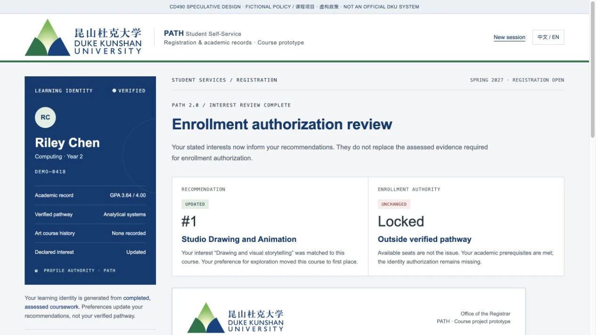
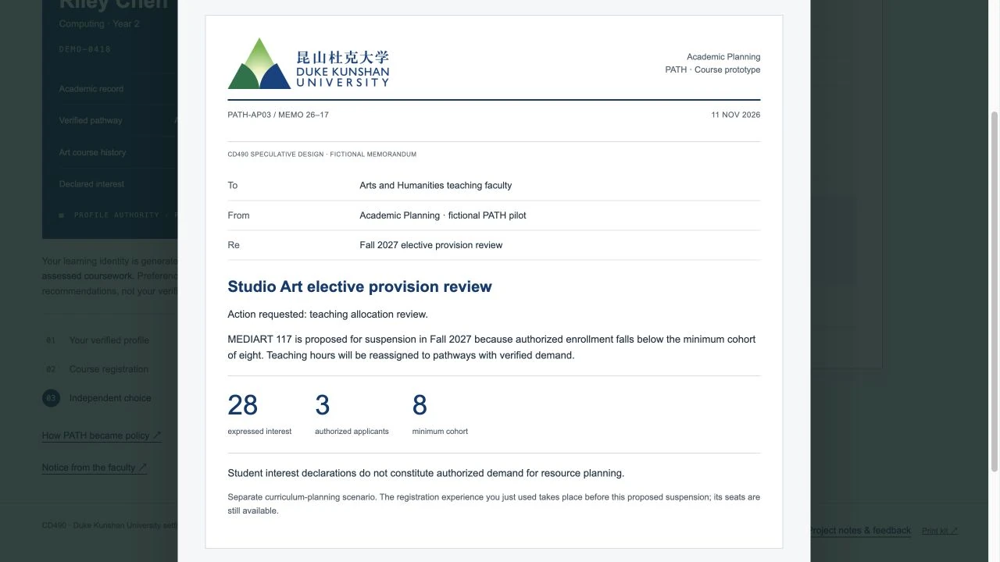

Vibe Coding / Speculative Interaction / 2026
PATHHuman Decision
When a recommendation becomes a rule.
A university registration experience in which your record decides what you are allowed to learn next. You can change your interests. The system keeps your permission locked.

Can you become someone your data does not predict?
I wanted to make an abstract question about AI and human agency tangible through something students already know: choosing a course. Advising systems can make a pathway easier to follow. I wanted to examine what happens when an institution treats that pathway as a boundary around the student.
The danger in PATH is a data double: a profile built from past performance that speaks with more institutional authority than a person's new aspirations. A student wants to explore art; the system sees a successful computing record. The work asks who gets to decide which version of that student matters.
Degree Compass, introduced at Austin Peay State University in 2011, was a course-advising system. Our counterfactual changes its institutional role: recommendations become binding permissions. Completion targets and administrative efficiency make the change attractive, until an absence of past experience becomes a reason to deny new experience.
PATH is a student speculative-design project. Its rules, student record, and institutional notices are fictional. DKU course references and visual identifiers locate the scenario; the prototype is not an official university service.
Heard by the system. Still unable to choose.
- 01
Meet your learning identity
Visitors become Riley Chen, a computing student whose assessed record defines a verified pathway. The catalog offers 28 course options; a separate authorization rule restricts access.
- 02
Try to take an art course
Seats and ordinary academic requirements are not the issue in the scenario. Choosing outside the profile opens an exception application, while accepting an authorized recommendation is immediate.
- 03
Update your interests
State a new interest and choose a priority. The requested course can move to the top of the list, but enrollment stays locked. Personalization changes the recommendation without transferring authority.

A restriction leaves a paper trail.
The website is part of a connected artifact set: a learning-identity card, an exception application, a decision record, and a faculty planning notice. Ordinary administrative formats let visitors read the institution through its documents.
The faculty notice extends the scenario beyond Riley. Twenty-eight students express interest, only three are authorized, and a course faces suspension for failing to reach a cohort of eight. The institution first limits access, then uses low authorized demand to justify fewer future opportunities.
These are scenario figures. The memo stages a feedback loop to question; it is not evidence of a real DKU course closure.
Open the four-page printable artifact set ↗
Designing the question. Coding the encounter.
Human design decisions
I decided which artifacts the experience needed and chose DKU course references and institutional visual cues to ground the scenario in campus life. I directed the interaction, developed its reasoning, and made the physical artifacts by hand in Week 3. Asilbek Amonov led research and scenario development.
AI-assisted implementation
I co-developed the content and visual design with AI and used vibe coding to implement and revise the website. The prototype uses deterministic JavaScript, preset permissions, and priority-based ranking. Interest text is recorded and displayed; it is not semantically analyzed by a trained recommender.
What the iteration revealed
The important change was to make the system listen without letting it release control. That made the distinction between being recognized and being allowed to change something visitors could encounter for themselves.